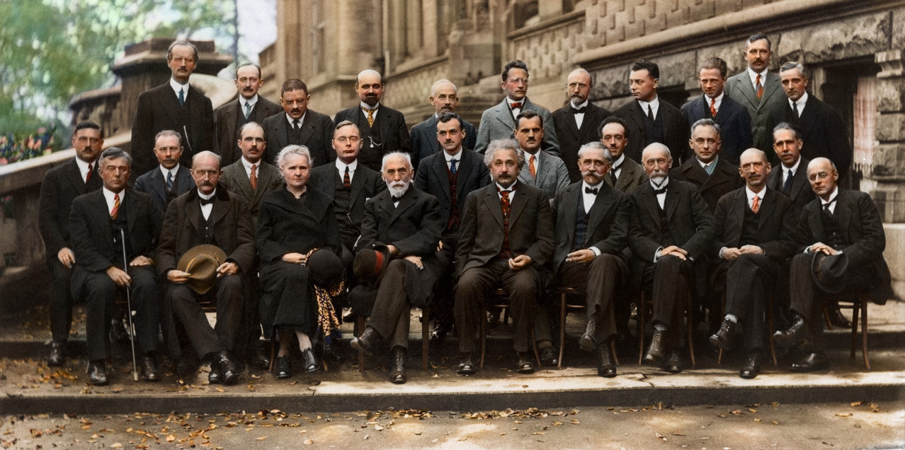
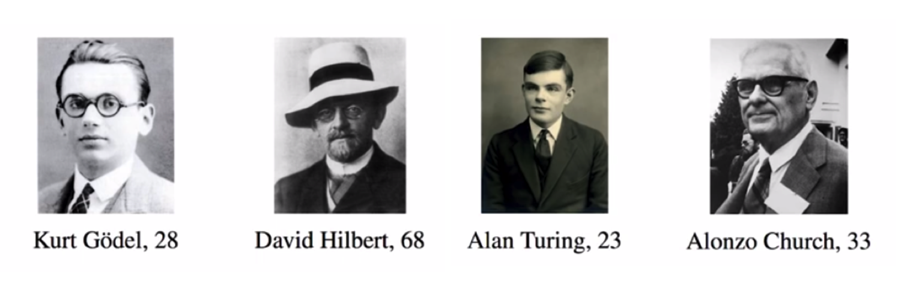

Chapter2: History
如果你看完了前一章，还能接受的话，一定觉得这种替换操作很无聊吧。为什么有人要做这样的东西出来？
这要从 Hilbert 说起。大卫·希尔伯特，David Hilbert，（1862年-1943年），一位伟大的德国数学家。
他提出了一个你在学初中几何时梦想的问题：
有没有一种程序，你给它一道几何题，它就能自动判断出命题是真还是假？
这样所有的数学作业都可以写成：我把这道题送入Hilbert 判定程序，程序判定它是真的，由于 Hilbert程序已经被数学家证明是正确的，所以此题得证。
甚至，不仅仅是几何题，而是所有的数学问题。是不是存在一个程序(或是说算法)，能够自动判定任意一个按标准方式输入的数学命题是真是假？
这是在1928年提出的 Hilbert 规划中的一个重要问题。德语称为Entscheidungsproblem，（可判定性问题），还要配合Hilbert一句非常燃的宣言：
“Wir müssen wissen,wir werden wissen.”
“我们必须知道，我们必将知道！”
一个数学家想用程序替代所有的数学家，即使当时1928年连电脑都还没有发明。这就是一个领域中大师的态度：走自己的路，让别人无路可走。
所以，那些没有机会学phaco学玻切的年轻医生们注意了。这个故事告诉你们，可以现在开始学习计算机、学习人工智能、深入学习深度学习，与程序员和工程师协力做出自动看病自动做手术的机器。没机会自己做手术，那就让手术不再需要人类来操作！
放心，那些真正的手术大师是有着开放的心态，他们愿意教会年轻医师做手术，也愿意把自己的经验、技巧固化在机器中。真正的大师都是游戏规则的改变者，是变革的推动者。只有那些“匠人”才守着当前一点点”本领”。那些生怕“教会徒弟饿死师傅”的师傅，恐怕是这师傅会的东西实在太少。
回到我们的数学故事。虽然 Hilbert 立下了宏伟的志愿。但在这个问题上他失败了。(Hilbert 规划远远不止这一项)
指出Hilbert错误的是哥德尔Gödel，那一年 Hilbert 68岁，Gödel28岁。Gödel证明存在一类命题，既无法证明也无法证伪，不存在一种算法能够判定所有的命题是真还是假。
Gödel使用的工具是由阿兰图灵Turing提供的数学工具——图灵机。Turing更被大众所知的可能是他破解了二战时德军的 Enigma 密码机，有个电影《模仿游戏》就是讲他的。
Turing所提供的是一种描述运算的严格定义。哪怕幼儿园的小朋友也知道1+1=2。可是什么是”1”，什么是”+”，什么是”=”，什么是”2”，这些都是没有定义的。意识到这一点恐怕很困难，因为太熟悉太习以为常了，以致于我们并没有意识到”1+1=2”可能是没被定义没被证明过的事。
Turing用一条纸带和一个在纸带上读写的机器来描述运算，顺便说后来发明的计算机就真是用打孔纸带来记录程序的，如果要修改已经写好的程序，就用纸再给原来的纸带贴上打个补丁(patch)。所以现在修改程序错误仍然叫打补丁。
利用图灵机， Hilbert 的问题就等价于是否存在一个图灵机程序能够判定其他的任一图灵机程序是否能够停止运行，即所谓”停机问题“。经过数学家们的研究，现在知道了我们无法预先判断一个图灵机是否能停机。这称为哥德尔不完备定理。
上述这一切都是发生在欧洲大陆和英国。在大西洋的另一侧Alonzo Church也在研究类似的问题。
几乎是同时，1930年代，他做出了一种和图灵机等价的东西，就是Lambda calculus。图灵机和Lambda calculus都是可以表示一切运算的，图灵机更难理解一些，需要想象读取、写入、纸带移动、内存之类的事情。Lambda calculus则只有字符替换这么一个规则。
剧透一下，仅仅利用字符替换这么一个操作，Church重新定义或者说构造出了什么是1，什么是加法，什么是乘法……有了这些你可以构造出大千世界。
这张照片据说是诸神的合影：

但在佛教中，神只领悟了一个世界运行的原理。
而这些人，他们领悟了创造世界的方法。
